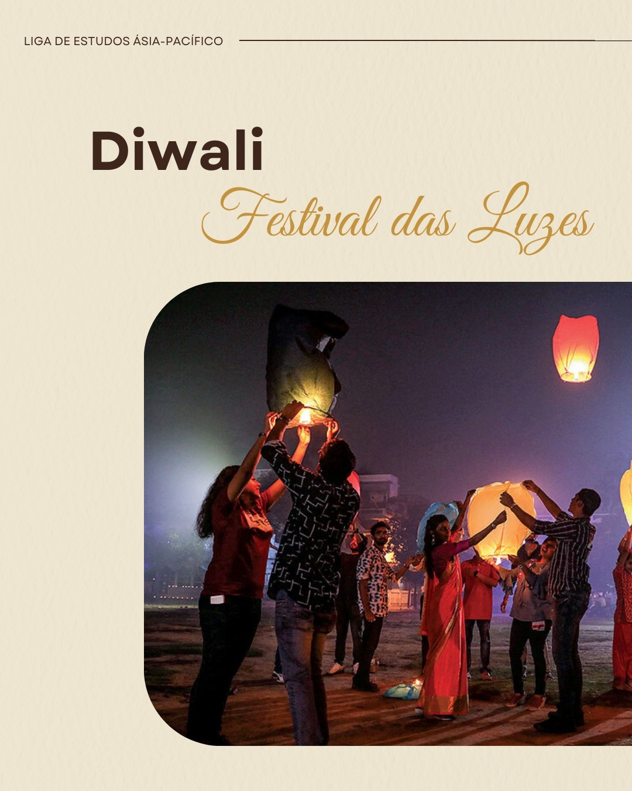
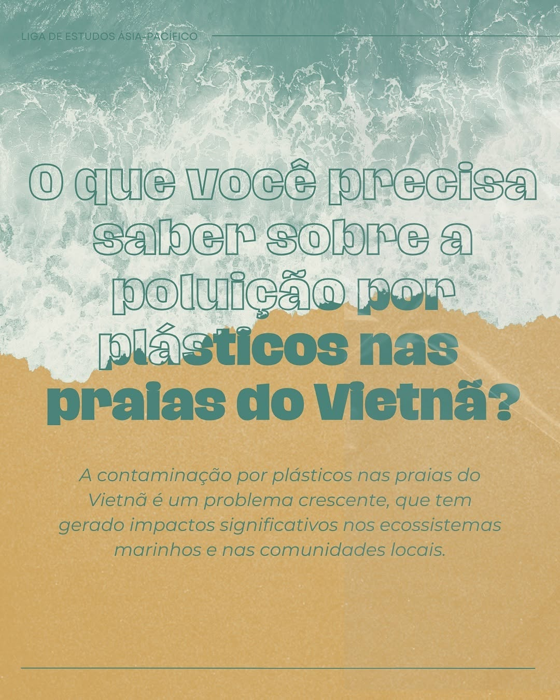
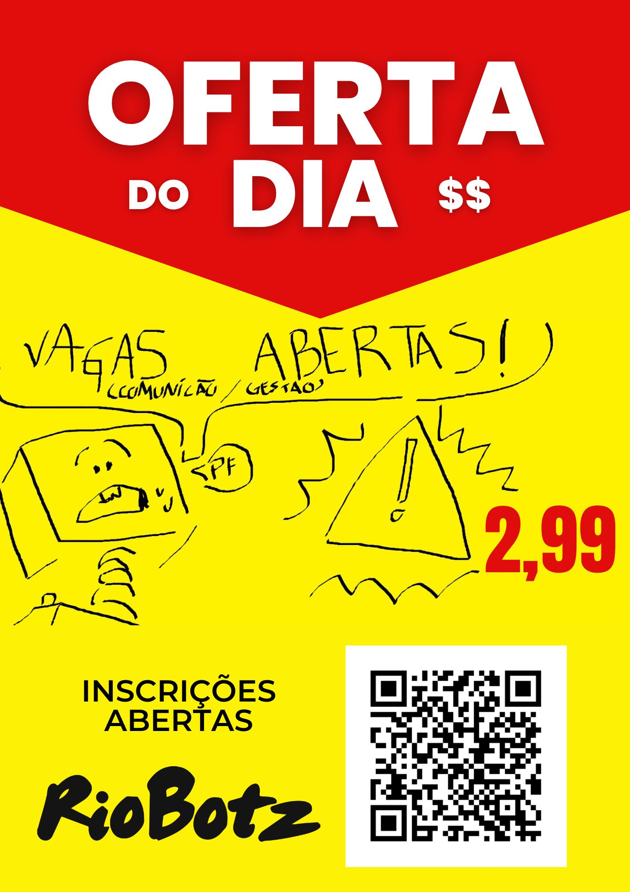

Redação · Conteúdo · Campanhas
Juno Giordano · Estudante de Jornalismo & Estudos de Mídia com foco em redação editorial, conteúdo para redes e campanhas.
Ver trabalhosSobre
Sou estudante de Publicidade e Jornalismo com o olho afiado para o que
uma palavra bem colocada pode fazer. Meu trabalho vive na interseção entre
informação e persuasão — artigos que educam, carrosséis
que prendem, campanhas que movem.
Acredito que boa redação não é só clareza: é ritmo, é escolha, é
entender quem está do outro lado.
Serviços
Artigos & Editorial
Como a ciberespionagem chinesa e norte-coreana ameaça a estabilidade democrática de Taiwan e da Coreia do Sul. Páginas 49–55.
↗ Análise InternacionalO derretimento acelerado das geleiras do Himalaia e seus impactos sobre a segurança hídrica, alimentar e energética de dois bilhões de pessoas na Ásia. Páginas 14–17.
↗ Análise InternacionalO terremoto em Cebu e o que ele revela sobre vulnerabilidade institucional, resposta humanitária internacional e disputa de soft power no Indo-Pacífico. Páginas 18–23.
↗Conteúdo & Redes


Campanhas & Copy
